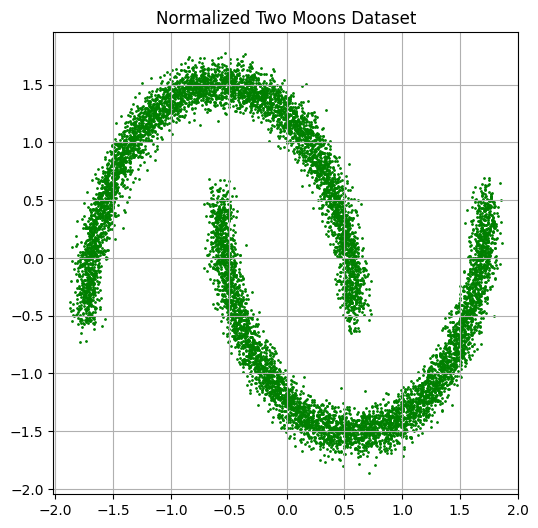
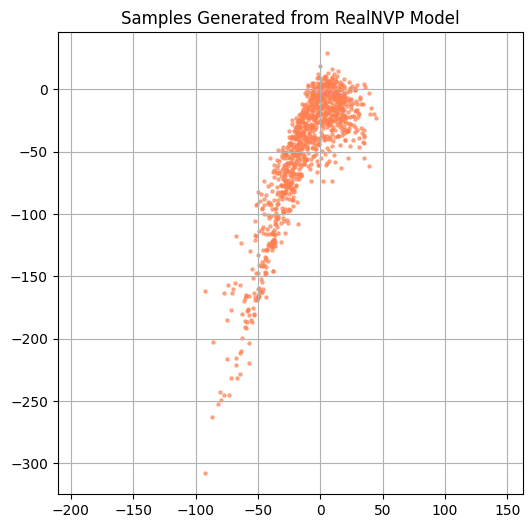

import torch
import torch.nn as nn
import torch.nn.functional as F
import torch.optim as optim
from torch.utils.data import TensorDataset, DataLoader, random_split
from torch.distributions import MultivariateNormal
import numpy as np
import matplotlib.pyplot as plt
from sklearn.model_selection import train_test_split
from sklearn.preprocessing import StandardScaler
from sklearn.datasets import make_moonsRealNVP Model in PyTorch
This notebook provides a simple implementation of a RealNVP flow model.
Create Dataset
The dataset we will use is created by the make_moons function from the Python library sklearn. This create a noisy dataset of points in 2D that resemble two crescents.
# Generate the two moons dataset
data, _ = make_moons(n_samples=10000, noise=0.05)
data = data.astype("float32")
# Normalize using sklearn's StandardScaler
scaler = StandardScaler()
normalized_data = scaler.fit_transform(data)
normalized_data = torch.tensor(normalized_data, dtype=torch.float32)
# Visualize
plt.figure(figsize=(6, 6))
plt.scatter(normalized_data[:, 0], normalized_data[:, 1], c="green", s=1)
plt.title("Normalized Two Moons Dataset")
plt.axis("equal")
plt.grid(True)
plt.show()
Coupling Network for RealNVP
class CouplingMLP(nn.Module):
"""
Neural network that outputs scale (s) and translation (t) vectors
for a RealNVP coupling layer.
"""
def __init__(self, input_dim, hidden_dim=256):
super().__init__()
# Translation network (output is linear)
self.t_net = nn.Sequential(
nn.Linear(input_dim, hidden_dim),
nn.ReLU(),
nn.Linear(hidden_dim, hidden_dim),
nn.ReLU(),
nn.Linear(hidden_dim, hidden_dim),
nn.ReLU(),
nn.Linear(hidden_dim, hidden_dim),
nn.ReLU(),
nn.Linear(hidden_dim, input_dim) # linear output
)
# Scale network (output is tanh)
self.s_net = nn.Sequential(
nn.Linear(input_dim, hidden_dim),
nn.ReLU(),
nn.Linear(hidden_dim, hidden_dim),
nn.ReLU(),
nn.Linear(hidden_dim, hidden_dim),
nn.ReLU(),
nn.Linear(hidden_dim, hidden_dim),
nn.ReLU(),
nn.Linear(hidden_dim, input_dim),
nn.Tanh() # ensure output scale stays within range
)
def forward(self, x):
"""
Returns the scale (s) and translation (t) outputs for input x.
"""
s = self.s_net(x)
t = self.t_net(x)
return s, tRealNVP
class RealNVP(nn.Module):
def __init__(self, num_coupling_layers, input_dim=2):
super().__init__()
self.num_coupling_layers = num_coupling_layers
# Prior distribution in latent space
self.prior = MultivariateNormal(torch.zeros(input_dim), torch.eye(input_dim))
# Alternating binary masks, e.g., [0,1], [1,0], ...
self.masks = torch.tensor(
[[0, 1], [1, 0]] * (num_coupling_layers // 2),
dtype=torch.float32
)
# Create coupling networks (scale and translate nets)
self.coupling_layers = nn.ModuleList([
CouplingMLP(input_dim) for _ in range(num_coupling_layers)
])
def forward(self, x, reverse=False):
"""
Performs the RealNVP transformation.
If reverse=False, maps data -> latent space.
If reverse=True, maps latent space -> data.
"""
log_det = torch.zeros(x.size(0))
direction = -1 if not reverse else 1
layers = range(self.num_coupling_layers)[::direction]
for i in layers:
mask = self.masks[i].to(x.device)
x_masked = x * mask
s, t = self.coupling_layers[i](x_masked)
# Only apply scale/translate to unmasked dims
s = s * (1 - mask)
t = t * (1 - mask)
gate = (direction - 1) / 2 # -1 if forward, 0 if reverse
if reverse:
x = (x - t) * torch.exp(-s) * (1 - mask) + x_masked
else:
x = (x * torch.exp(s) + t) * (1 - mask) + x_masked
log_det += gate * torch.sum(s, dim=1)
return x, log_det
def log_prob(self, x):
"""
Computes the log-likelihood of the input data.
"""
z, log_det = self.forward(x, reverse=False)
log_likelihood = self.prior.log_prob(z) + log_det
return log_likelihood
def loss(self, x):
"""
Negative log-likelihood loss.
"""
return -self.log_prob(x).mean()model = RealNVP(num_coupling_layers=6)
device = torch.device("cuda" if torch.cuda.is_available() else "cpu")
model = model.to(device)
optimizer = optim.Adam(model.parameters(), lr=1e-4)
# Assume normalized_data is a (N, 2) torch tensor
dataset = TensorDataset(normalized_data)
train_size = int(0.8 * len(dataset))
val_size = len(dataset) - train_size
train_data, val_data = random_split(dataset, [train_size, val_size])
train_loader = DataLoader(train_data, batch_size=256, shuffle=True)
val_loader = DataLoader(val_data, batch_size=256)EPOCHS = 200
model.train()
for epoch in range(EPOCHS):
train_loss = 0.0
model.train()
for batch in train_loader:
x = batch[0].to(device)
loss = model.loss(x)
optimizer.zero_grad()
loss.backward()
optimizer.step()
train_loss += loss.item() * x.size(0)
val_loss = 0.0
model.eval()
with torch.no_grad():
for batch in val_loader:
x = batch[0].to(device)
val_loss += model.loss(x).item() * x.size(0)
print(f"Epoch {epoch+1}/{EPOCHS} | Train Loss: {train_loss/train_size:.4f} | Val Loss: {val_loss/val_size:.4f}")Epoch 1/200 | Train Loss: 1.5478 | Val Loss: -0.3208
Epoch 2/200 | Train Loss: -2.2334 | Val Loss: -3.7980
Epoch 3/200 | Train Loss: -4.0444 | Val Loss: -4.1352
Epoch 4/200 | Train Loss: -4.1448 | Val Loss: -4.1510
Epoch 5/200 | Train Loss: -4.1534 | Val Loss: -4.1554
Epoch 6/200 | Train Loss: -4.1564 | Val Loss: -4.1573
Epoch 7/200 | Train Loss: -4.1579 | Val Loss: -4.1583
Epoch 8/200 | Train Loss: -4.1586 | Val Loss: -4.1589
Epoch 9/200 | Train Loss: -4.1591 | Val Loss: -4.1592
Epoch 10/200 | Train Loss: -4.1594 | Val Loss: -4.1595
Epoch 11/200 | Train Loss: -4.1596 | Val Loss: -4.1596
Epoch 12/200 | Train Loss: -4.1597 | Val Loss: -4.1598
Epoch 13/200 | Train Loss: -4.1599 | Val Loss: -4.1599
Epoch 14/200 | Train Loss: -4.1600 | Val Loss: -4.1600
Epoch 15/200 | Train Loss: -4.1601 | Val Loss: -4.1599
Epoch 16/200 | Train Loss: -4.1601 | Val Loss: -4.1600
Epoch 17/200 | Train Loss: -4.1602 | Val Loss: -4.1602
Epoch 18/200 | Train Loss: -4.1602 | Val Loss: -4.1602
Epoch 19/200 | Train Loss: -4.1602 | Val Loss: -4.1602
Epoch 20/200 | Train Loss: -4.1603 | Val Loss: -4.1603
Epoch 21/200 | Train Loss: -4.1603 | Val Loss: -4.1603
Epoch 22/200 | Train Loss: -4.1603 | Val Loss: -4.1603
Epoch 23/200 | Train Loss: -4.1603 | Val Loss: -4.1603
Epoch 24/200 | Train Loss: -4.1603 | Val Loss: -4.1602
Epoch 25/200 | Train Loss: -4.1603 | Val Loss: -4.1603
Epoch 26/200 | Train Loss: -4.1604 | Val Loss: -4.1604
Epoch 27/200 | Train Loss: -4.1604 | Val Loss: -4.1604
Epoch 28/200 | Train Loss: -4.1604 | Val Loss: -4.1604
Epoch 29/200 | Train Loss: -4.1604 | Val Loss: -4.1604
Epoch 30/200 | Train Loss: -4.1604 | Val Loss: -4.1605
Epoch 31/200 | Train Loss: -4.1604 | Val Loss: -4.1605
Epoch 32/200 | Train Loss: -4.1605 | Val Loss: -4.1605
Epoch 33/200 | Train Loss: -4.1605 | Val Loss: -4.1605
Epoch 34/200 | Train Loss: -4.1605 | Val Loss: -4.1606
Epoch 35/200 | Train Loss: -4.1605 | Val Loss: -4.1606
Epoch 36/200 | Train Loss: -4.1606 | Val Loss: -4.1606
Epoch 37/200 | Train Loss: -4.1606 | Val Loss: -4.1606
Epoch 38/200 | Train Loss: -4.1606 | Val Loss: -4.1606
Epoch 39/200 | Train Loss: -4.1606 | Val Loss: -4.1606
Epoch 40/200 | Train Loss: -4.1606 | Val Loss: -4.1606
Epoch 41/200 | Train Loss: -4.1606 | Val Loss: -4.1607
Epoch 42/200 | Train Loss: -4.1606 | Val Loss: -4.1607
Epoch 43/200 | Train Loss: -4.1606 | Val Loss: -4.1606
Epoch 44/200 | Train Loss: -4.1606 | Val Loss: -4.1607
Epoch 45/200 | Train Loss: -4.1607 | Val Loss: -4.1606
Epoch 46/200 | Train Loss: -4.1607 | Val Loss: -4.1606
Epoch 47/200 | Train Loss: -4.1607 | Val Loss: -4.1607
Epoch 48/200 | Train Loss: -4.1607 | Val Loss: -4.1608
Epoch 49/200 | Train Loss: -4.1607 | Val Loss: -4.1606
Epoch 50/200 | Train Loss: -4.1607 | Val Loss: -4.1607
Epoch 51/200 | Train Loss: -4.1607 | Val Loss: -4.1607
Epoch 52/200 | Train Loss: -4.1607 | Val Loss: -4.1607
Epoch 53/200 | Train Loss: -4.1608 | Val Loss: -4.1608
Epoch 54/200 | Train Loss: -4.1608 | Val Loss: -4.1608
Epoch 55/200 | Train Loss: -4.1608 | Val Loss: -4.1609
Epoch 56/200 | Train Loss: -4.1608 | Val Loss: -4.1608
Epoch 57/200 | Train Loss: -4.1608 | Val Loss: -4.1609
Epoch 58/200 | Train Loss: -4.1608 | Val Loss: -4.1609
Epoch 59/200 | Train Loss: -4.1608 | Val Loss: -4.1609
Epoch 60/200 | Train Loss: -4.1609 | Val Loss: -4.1609
Epoch 61/200 | Train Loss: -4.1609 | Val Loss: -4.1610
Epoch 62/200 | Train Loss: -4.1610 | Val Loss: -4.1610
Epoch 63/200 | Train Loss: -4.1609 | Val Loss: -4.1610
Epoch 64/200 | Train Loss: -4.1610 | Val Loss: -4.1610
Epoch 65/200 | Train Loss: -4.1610 | Val Loss: -4.1610
Epoch 66/200 | Train Loss: -4.1610 | Val Loss: -4.1611
Epoch 67/200 | Train Loss: -4.1610 | Val Loss: -4.1610
Epoch 68/200 | Train Loss: -4.1610 | Val Loss: -4.1609
Epoch 69/200 | Train Loss: -4.1610 | Val Loss: -4.1611
Epoch 70/200 | Train Loss: -4.1610 | Val Loss: -4.1611
Epoch 71/200 | Train Loss: -4.1611 | Val Loss: -4.1611
Epoch 72/200 | Train Loss: -4.1611 | Val Loss: -4.1611
Epoch 73/200 | Train Loss: -4.1611 | Val Loss: -4.1612
Epoch 74/200 | Train Loss: -4.1612 | Val Loss: -4.1612
Epoch 75/200 | Train Loss: -4.1611 | Val Loss: -4.1611
Epoch 76/200 | Train Loss: -4.1612 | Val Loss: -4.1612
Epoch 77/200 | Train Loss: -4.1611 | Val Loss: -4.1611
Epoch 78/200 | Train Loss: -4.1611 | Val Loss: -4.1612
Epoch 79/200 | Train Loss: -4.1612 | Val Loss: -4.1613
Epoch 80/200 | Train Loss: -4.1612 | Val Loss: -4.1613
Epoch 81/200 | Train Loss: -4.1612 | Val Loss: -4.1612
Epoch 82/200 | Train Loss: -4.1612 | Val Loss: -4.1612
Epoch 83/200 | Train Loss: -4.1612 | Val Loss: -4.1609
Epoch 84/200 | Train Loss: -4.1612 | Val Loss: -4.1613
Epoch 85/200 | Train Loss: -4.1612 | Val Loss: -4.1612
Epoch 86/200 | Train Loss: -4.1612 | Val Loss: -4.1613
Epoch 87/200 | Train Loss: -4.1613 | Val Loss: -4.1613
Epoch 88/200 | Train Loss: -4.1613 | Val Loss: -4.1613
Epoch 89/200 | Train Loss: -4.1613 | Val Loss: -4.1613
Epoch 90/200 | Train Loss: -4.1612 | Val Loss: -4.1613
Epoch 91/200 | Train Loss: -4.1613 | Val Loss: -4.1613
Epoch 92/200 | Train Loss: -4.1613 | Val Loss: -4.1613
Epoch 93/200 | Train Loss: -4.1613 | Val Loss: -4.1614
Epoch 94/200 | Train Loss: -4.1613 | Val Loss: -4.1612
Epoch 95/200 | Train Loss: -4.1612 | Val Loss: -4.1613
Epoch 96/200 | Train Loss: -4.1613 | Val Loss: -4.1612
Epoch 97/200 | Train Loss: -4.1613 | Val Loss: -4.1613
Epoch 98/200 | Train Loss: -4.1613 | Val Loss: -4.1614
Epoch 99/200 | Train Loss: -4.1613 | Val Loss: -4.1614
Epoch 100/200 | Train Loss: -4.1613 | Val Loss: -4.1611
Epoch 101/200 | Train Loss: -4.1613 | Val Loss: -4.1613
Epoch 102/200 | Train Loss: -4.1613 | Val Loss: -4.1614
Epoch 103/200 | Train Loss: -4.1613 | Val Loss: -4.1613
Epoch 104/200 | Train Loss: -4.1613 | Val Loss: -4.1613
Epoch 105/200 | Train Loss: -4.1613 | Val Loss: -4.1613
Epoch 106/200 | Train Loss: -4.1613 | Val Loss: -4.1614
Epoch 107/200 | Train Loss: -4.1613 | Val Loss: -4.1613
Epoch 108/200 | Train Loss: -4.1613 | Val Loss: -4.1611
Epoch 109/200 | Train Loss: -4.1613 | Val Loss: -4.1613
Epoch 110/200 | Train Loss: -4.1613 | Val Loss: -4.1613
Epoch 111/200 | Train Loss: -4.1612 | Val Loss: -4.1613
Epoch 112/200 | Train Loss: -4.1612 | Val Loss: -4.1613
Epoch 113/200 | Train Loss: -4.1613 | Val Loss: -4.1614
Epoch 114/200 | Train Loss: -4.1613 | Val Loss: -4.1613
Epoch 115/200 | Train Loss: -4.1613 | Val Loss: -4.1614
Epoch 116/200 | Train Loss: -4.1613 | Val Loss: -4.1613
Epoch 117/200 | Train Loss: -4.1613 | Val Loss: -4.1611
Epoch 118/200 | Train Loss: -4.1613 | Val Loss: -4.1613
Epoch 119/200 | Train Loss: -4.1614 | Val Loss: -4.1614
Epoch 120/200 | Train Loss: -4.1613 | Val Loss: -4.1614
Epoch 121/200 | Train Loss: -4.1613 | Val Loss: -4.1614
Epoch 122/200 | Train Loss: -4.1612 | Val Loss: -4.1613
Epoch 123/200 | Train Loss: -4.1613 | Val Loss: -4.1614
Epoch 124/200 | Train Loss: -4.1613 | Val Loss: -4.1614
Epoch 125/200 | Train Loss: -4.1614 | Val Loss: -4.1614
Epoch 126/200 | Train Loss: -4.1613 | Val Loss: -4.1613
Epoch 127/200 | Train Loss: -4.1613 | Val Loss: -4.1613
Epoch 128/200 | Train Loss: -4.1614 | Val Loss: -4.1614
Epoch 129/200 | Train Loss: -4.1614 | Val Loss: -4.1614
Epoch 130/200 | Train Loss: -4.1613 | Val Loss: -4.1614
Epoch 131/200 | Train Loss: -4.1614 | Val Loss: -4.1614
Epoch 132/200 | Train Loss: -4.1614 | Val Loss: -4.1614
Epoch 133/200 | Train Loss: -4.1614 | Val Loss: -4.1613
Epoch 134/200 | Train Loss: -4.1613 | Val Loss: -4.1614
Epoch 135/200 | Train Loss: -4.1614 | Val Loss: -4.1612
Epoch 136/200 | Train Loss: -4.1613 | Val Loss: -4.1614
Epoch 137/200 | Train Loss: -4.1614 | Val Loss: -4.1614
Epoch 138/200 | Train Loss: -4.1614 | Val Loss: -4.1614
Epoch 139/200 | Train Loss: -4.1614 | Val Loss: -4.1614
Epoch 140/200 | Train Loss: -4.1614 | Val Loss: -4.1614
Epoch 141/200 | Train Loss: -4.1613 | Val Loss: -4.1614
Epoch 142/200 | Train Loss: -4.1614 | Val Loss: -4.1614
Epoch 143/200 | Train Loss: -4.1614 | Val Loss: -4.1613
Epoch 144/200 | Train Loss: -4.1613 | Val Loss: -4.1614
Epoch 145/200 | Train Loss: -4.1614 | Val Loss: -4.1614
Epoch 146/200 | Train Loss: -4.1614 | Val Loss: -4.1614
Epoch 147/200 | Train Loss: -4.1613 | Val Loss: -4.1614
Epoch 148/200 | Train Loss: -4.1614 | Val Loss: -4.1614
Epoch 149/200 | Train Loss: -4.1614 | Val Loss: -4.1614
Epoch 150/200 | Train Loss: -4.1614 | Val Loss: -4.1614
Epoch 151/200 | Train Loss: -4.1614 | Val Loss: -4.1614
Epoch 152/200 | Train Loss: -4.1614 | Val Loss: -4.1614
Epoch 153/200 | Train Loss: -4.1614 | Val Loss: -4.1614
Epoch 154/200 | Train Loss: -4.1614 | Val Loss: -4.1614
Epoch 155/200 | Train Loss: -4.1614 | Val Loss: -4.1614
Epoch 156/200 | Train Loss: -4.1614 | Val Loss: -4.1614
Epoch 157/200 | Train Loss: -4.1614 | Val Loss: -4.1614
Epoch 158/200 | Train Loss: -4.1614 | Val Loss: -4.1614
Epoch 159/200 | Train Loss: -4.1614 | Val Loss: -4.1614
Epoch 160/200 | Train Loss: -4.1614 | Val Loss: -4.1611
Epoch 161/200 | Train Loss: -4.1614 | Val Loss: -4.1614
Epoch 162/200 | Train Loss: -4.1614 | Val Loss: -4.1614
Epoch 163/200 | Train Loss: -4.1614 | Val Loss: -4.1613
Epoch 164/200 | Train Loss: -4.1613 | Val Loss: -4.1613
Epoch 165/200 | Train Loss: -4.1614 | Val Loss: -4.1614
Epoch 166/200 | Train Loss: -4.1614 | Val Loss: -4.1614
Epoch 167/200 | Train Loss: -4.1613 | Val Loss: -4.1614
Epoch 168/200 | Train Loss: -4.1613 | Val Loss: -4.1614
Epoch 169/200 | Train Loss: -4.1613 | Val Loss: -4.1614
Epoch 170/200 | Train Loss: -4.1614 | Val Loss: -4.1614
Epoch 171/200 | Train Loss: -4.1614 | Val Loss: -4.1615
Epoch 172/200 | Train Loss: -4.1614 | Val Loss: -4.1614
Epoch 173/200 | Train Loss: -4.1614 | Val Loss: -4.1614
Epoch 174/200 | Train Loss: -4.1614 | Val Loss: -4.1614
Epoch 175/200 | Train Loss: -4.1613 | Val Loss: -4.1614
Epoch 176/200 | Train Loss: -4.1614 | Val Loss: -4.1614
Epoch 177/200 | Train Loss: -4.1614 | Val Loss: -4.1615
Epoch 178/200 | Train Loss: -4.1614 | Val Loss: -4.1614
Epoch 179/200 | Train Loss: -4.1614 | Val Loss: -4.1614
Epoch 180/200 | Train Loss: -4.1614 | Val Loss: -4.1615
Epoch 181/200 | Train Loss: -4.1614 | Val Loss: -4.1614
Epoch 182/200 | Train Loss: -4.1614 | Val Loss: -4.1613
Epoch 183/200 | Train Loss: -4.1614 | Val Loss: -4.1615
Epoch 184/200 | Train Loss: -4.1614 | Val Loss: -4.1614
Epoch 185/200 | Train Loss: -4.1614 | Val Loss: -4.1615
Epoch 186/200 | Train Loss: -4.1614 | Val Loss: -4.1615
Epoch 187/200 | Train Loss: -4.1614 | Val Loss: -4.1615
Epoch 188/200 | Train Loss: -4.1615 | Val Loss: -4.1615
Epoch 189/200 | Train Loss: -4.1614 | Val Loss: -4.1615
Epoch 190/200 | Train Loss: -4.1614 | Val Loss: -4.1614
Epoch 191/200 | Train Loss: -4.1614 | Val Loss: -4.1615
Epoch 192/200 | Train Loss: -4.1614 | Val Loss: -4.1615
Epoch 193/200 | Train Loss: -4.1614 | Val Loss: -4.1614
Epoch 194/200 | Train Loss: -4.1614 | Val Loss: -4.1614
Epoch 195/200 | Train Loss: -4.1614 | Val Loss: -4.1614
Epoch 196/200 | Train Loss: -4.1614 | Val Loss: -4.1615
Epoch 197/200 | Train Loss: -4.1614 | Val Loss: -4.1613
Epoch 198/200 | Train Loss: -4.1614 | Val Loss: -4.1615
Epoch 199/200 | Train Loss: -4.1615 | Val Loss: -4.1614
Epoch 200/200 | Train Loss: -4.1614 | Val Loss: -4.1614import matplotlib.pyplot as plt
# Plot loss manually if tracked
# (Skip if you didn't store loss during training)
# Inference: X → Z
model.eval()
with torch.no_grad():
z, _ = model(normalized_data.to(device), reverse=False)
z = z.cpu().numpy()
# Generation: Z → X
samples = torch.randn(3000, 2).to(device) # latent samples
with torch.no_grad():
x_gen, _ = model(samples, reverse=True)
x_gen = x_gen.cpu().numpy()
samples = samples.cpu().numpy()
# Plotting
f, axes = plt.subplots(2, 2, figsize=(20, 15))
# Original data
axes[0, 0].scatter(normalized_data[:, 0], normalized_data[:, 1], color="r", s=5)
axes[0, 0].set(title="Inference data space X", xlabel="x", ylabel="y")
# Encoded latent space
axes[0, 1].scatter(z[:, 0], z[:, 1], color="r", s=5)
axes[0, 1].set(title="Inference latent space Z", xlabel="x", ylabel="y")
axes[0, 1].set_xlim([-3.5, 4])
axes[0, 1].set_ylim([-4, 4])
# Sampled latent Z
axes[1, 0].scatter(samples[:, 0], samples[:, 1], color="g", s=5)
axes[1, 0].set(title="Generated latent space Z", xlabel="x", ylabel="y")
# Generated data
axes[1, 1].scatter(x_gen[:, 0], x_gen[:, 1], color="g", s=5)
axes[1, 1].set(title="Generated data space X", xlabel="x", ylabel="y")
axes[1, 1].set_xlim([-2, 2])
axes[1, 1].set_ylim([-2, 2])
plt.tight_layout()
plt.show()
import matplotlib.pyplot as plt
model.eval()
# Step 1: Sample from base distribution (latent space)
z = torch.randn(1000, 2).to(device) # <-- This is where the line goes
# Step 2: Pass through RealNVP model in reverse to generate data
with torch.no_grad():
x_sampled, _ = model(z, reverse=True)
x_sampled = x_sampled.cpu().numpy()
# Step 3: Visualize
plt.figure(figsize=(6, 6))
plt.scatter(x_sampled[:, 0], x_sampled[:, 1], s=5, alpha=0.6, color='coral')
plt.title("Samples Generated from RealNVP Model")
plt.axis("equal")
plt.grid(True)
plt.show()